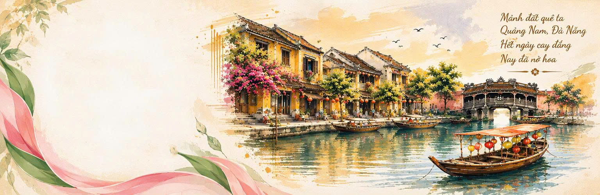
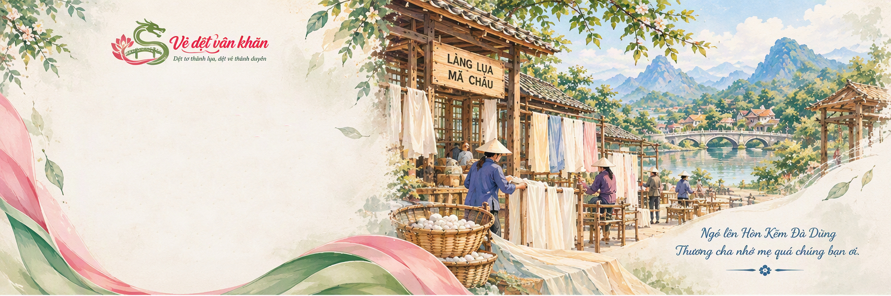

Hồn Vè Xứ Quảng Trên Từng Thớ Lụa
Từ tình yêu dành cho những giá trị văn hóa quê hương, chúng mình mong muốn tìm một cách mới mẻ để đưa những câu vè dân gian xứ Quảng đến gần hơn với đời sống hiện đại. Mỗi câu vè không chỉ là lời kể mộc mạc mà còn lưu giữ ký ức, phong tục và nét duyên của một vùng đất miền Trung.
Hồn Dân Gian Mộc Mạc
Lời ăn tiếng nói thân thuộc, điệu vè dân gian xứ Quảng dí dỏm, mộc mạc mà lắng đọng tâm tình, lưu truyền ký ức nguồn cội qua bao thế hệ.
Tinh Hoa Thủ Công
Sự kết tinh từ nghề trồng dâu, nuôi tằm, ươm tơ, dệt thoi truyền thống trăm năm của các nghệ nhân làng lụa Mã Châu bên bờ sông Thu Bồn.
Nét Mềm Mại Thơ Mộng
Những đường nét hoa văn mềm rũ, óng ánh tự nhiên trên nền lụa tơ tằm, kết nối nghệ thuật dệt với di sản các danh lam thắng cảnh miền Trung.

Hồn Vè Xứ Quảng – Nhịp Kể Của Miền Đất Thân Thương
Mỗi vùng đất đều có một cách riêng để kể câu chuyện về mình. Nếu cảnh sắc được lưu giữ qua những bức ảnh, lịch sử được ghi lại qua trang sách thì văn hóa dân gian lại được truyền tải qua những câu vè mộc mạc của người dân.
Đến với Đà Nẵng và không gian văn hóa xứ Quảng, những câu vè thân thương đưa chúng ta đến gần hơn với quê hương, từ cảnh sắc non nước, những địa danh quen thuộc đến phong tục, tập quán và sinh hoạt thường ngày. Chính sự giản dị đã tạo nên sức hấp dẫn bền lâu qua bao thế hệ.
Khám phá các mẫu khăn
Lụa Mã Châu – Hồn Tơ Gìn Giữ Di Sản & Lối Sống Xanh
Nhắc đến lụa Mã Châu là nhắc đến làng nghề dệt truyền thống lâu đời gắn liền với vùng đất Duy Xuyên, Quảng Nam. Trải qua bao thế hệ, những sợi tơ tằm óng ả được tạo nên từ bãi dâu ven sông Thu Bồn bồi đắp phù sa.
Chúng mình lựa chọn 100% tơ tằm tự nhiên không chỉ vì độ mềm mát, thanh lịch mà còn vì trách nhiệm với môi trường: sợi tơ nguyên bản phân hủy sinh học hoàn toàn, không phát thải vi nhựa, tạo sinh kế xanh bền vững cho các nghệ nhân dệt lụa xứ Quảng.
Xem 6 câu vè di sản6 Câu Vè – 6 Câu Chuyện Văn Hóa
Tương đương với 6 chiếc khăn lụa Mã Châu, mỗi sản phẩm là sự hội ngộ giữa lời vè dân gian và bức tranh danh lam thắng cảnh Đà Nẵng – Quảng Nam.
"Có thể một chiếc khăn chỉ là món phụ kiện nhỏ bé trong cuộc sống, nhưng với chúng mình, Vè Dệt Vân Khăn còn là nơi lưu giữ những điều đẹp đẽ nhất của quê hương."
Hãy mang một chút mềm mại của lụa Mã Châu, gửi một chút duyên dáng của câu vè xứ Quảng để làm quà tặng cho chính bạn và những người thân yêu.